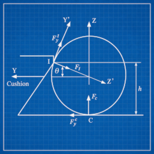
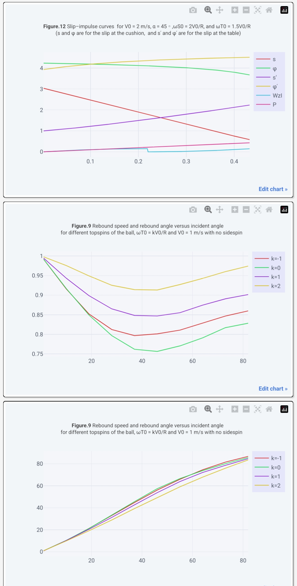

Billiards is often simplified in games as a series of linear reflections, but the reality of ball-cushion interaction is far more complex. The rebound angle and velocity of a ball hitting a cushion are influenced by its incoming spin, velocity, and the physical properties of the cushion itself.
To capture this accurately, we've implemented a numerical model based on the work of Mathavan et al. (2010), "A theoretical analysis of the dynamics of a billiards ball colliding with a cushion". This approach models the interaction by breaking down the collision into compression and restitution phases, accounting for slip velocities at both the cushion and table contact points.

The Mathavan Model
The core of the implementation involves calculating the slip velocity at the cushion contact point (I) and the table contact point (C).
Slip velocity at cushion contact point I:
\[ \dot{x}_I = \dot{v}_x + \dot{\omega}_y R \sin \theta - \dot{\omega}_z R \cos \theta \qquad \dot{y}'_I = -\dot{v}_y \sin \theta + \dot{\omega}_x R \] \[ \phi = \arctan\left(\frac{\dot{y}'_I}{\dot{x}_I}\right) \qquad s = \sqrt{(\dot{x}_I)^2 + (\dot{y}'_I)^2} \]Slip velocity at table contact point C:
\[ \dot{x}_C = \dot{v}_x - \dot{\omega}_y R \qquad \dot{y}_C = \dot{v}_y + \dot{\omega}_x R \] \[ \phi' = \arctan\left(\frac{\dot{y}_C}{\dot{x}_C}\right) \qquad s' = \sqrt{(\dot{x}_C)^2 + (\dot{y}_C)^2} \]Numerical Solutions
The simulation uses numerical solutions for the centroid velocity of the ball during the interaction.
And for the angular velocity:
Where \(\theta\) is a constant of the angle of cushion contact above ball centre with \(\sin(\theta) = 2/5\). \(\mu_s\) is the coefficient of sliding friction between the ball and table surface, and \(\mu_w\) is the coefficient of sliding friction between the ball and the cushion.
Energy and Restitution
The interaction is governed by the work done by the normal force at contact point I along the \(Z'\)-axis:
The compression phase iterates until \(\dot{v}_y \le 0\), and the restitution phase continues until the work done satisfies \(W_{Z'}^I \ge e_e^2 W_{\text{compression}}\). Some of the Mathavan equations not supplied by the paper were inferred to bridge gaps for a complete numerical solution.

To confirm the correctness of this implementation, we've recreated many of the figures from the paper in our interactive physics diagrams. These diagrams allow you to see the impulse and velocity changes across different incident angles and spins, proving consistency between the code and the theoretical model.
Experience the physics for yourself in the browser. Nine-ball, snooker, three-cushion, or practice mode.
Play now Practice Join lobby Leaderboard Source on GitHub